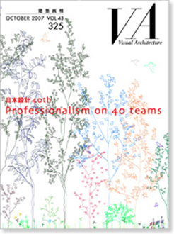

当サイトはJavaScriptをonにしてご覧ください。

OCTOBER 2007 VOL.43 325
日本設計40th
Professionalism on 40 teams
定価 3,300円（税込）
ISBN 978-4-901772-35-8
対談
畑村流決定学から学ぶ組織力とチーム力
畑村洋太郎×六鹿正治
Professionalism on 40 Teams
日本橋三井タワー
国立新美術館
アルペン丸の内タワー（アルペン本社ビル）
興和南青山ビル
ファッションクルーズ ニューポートひたちなか
渋谷C. C. Lemonホール（渋谷公会堂）
東京倶楽部ビルディング
Palm Deira
郡上市民病院
プラザノース
Topics I オフィス 業務空間はどうあるべきか
日産先進技術開発センター
TOC有明
東京大学柏キャンパス環境棟
大日本印刷 DNP五反田ビル
マブチモーター本社棟
いわき平競輪
栃木県議会議事堂・栃木県庁行政棟（1）・栃木県庁行政棟（2）新築工事
糸満市庁舎
Ao
高崎市総合福祉センター
Topics II 医療 医療施設チームの挑戦
青森県立つくしが丘病院
ひぐらしの里再開発
養父市大屋市民センター・大屋地域局
いわて県民情報交流センター
西新宿六丁目西第6地区第一種市街地再開発事業施設建築物新築工事
しながわ水族館アザラシ館
三井記念病院
熊本大学医学部付属病院中央診療棟
バックマイ病院改善計画
レジデンシア銀座イースト
Topics III 住宅 居住施設の今後
下関市立豊北中学校
南山高等学校・中学校女子部
秋田県立横手清陵学院中学校・高等学校
（仮称）甲南大学西宮キャンパス新築計画「甲南CUBE」
厦門海峡交流センター・国際会議センター
フクダ電子アリーナ
奈良県立図書情報館
秩父市歴史文化伝承館
北九州学術研究都市 事業化支援センター
（仮称）府中市立統合小・中学校新築工事
Topics IV 教育 教育施設に求められるもの
系譜の輪
Member List of 40 Teams
建築概要
会社概要
奥付
VA Information
連載 ていじ手帳 その十三「ラ・ソワカ」 伊藤ていじ